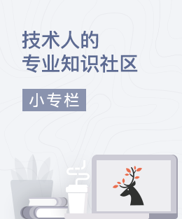

赞助者

成为赞助者
教程
基础
- 安装
- 介绍
- Vue实例
- 模板语法
- 计算属性和观察者
- Class与Style绑定
- 条件渲染
- 列表渲染
- 事件处理
- 表单输入绑定
- 组件
过渡 & 动画
- 进入/离开 & 列表过渡
- 状态过渡
可复用性 & 组合
- 混合
- 自定义指令
- 渲染函数 & JSX
- 插件
- 过滤器
工具
- 生产环境部署
- 单文件组件
- 单元测试
- Typescript支持
规模化
- 路由
- 状态管理
- 服务器端渲染
内在
- 深入响应式原理
迁移
- 从Vue1.x迁移
- 从Vue Router0.7.x迁移
- 从Vuex 0.6.x迁移1.0
更多
- 对比其他框架
- 加入Vue.js社区
- 认识团队